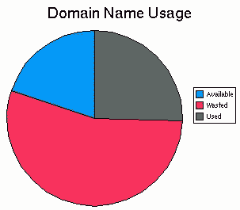
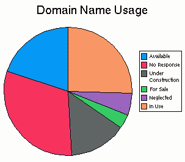

Coming up with a good domain name is very difficult. Even if you can find a name that is easy to remember and fits your corporate image it is probably already taken. If that's not frustrating enough then wait until you try to browse the site of the people who has pre-empted your brilliant name. There is a 55% chance that the domain name is being wasted.
Using NameStorm and Internic I recently tried 55 different domain names. These were one, two or three words long. For each name (eg: my company) I tried the words joined together (mycompany.com) and the words hyphenated (my-company.com). I only checked .com domains.
The detailed results of what I found are available and are summarized in the charts below.
|  |  |
People know and understand .com. We have the combined marketing forces of mega-corporations pumping .com into peoples heads. In fact, it has reached the point where many people think that everything on the internet has a .com. Users want to add a .com to everything. The result is that by choosing some domain other than .com (like .net or .org) you are probably going to lose visitors because they simply can't find you (eg: mydomain.net.com).
An exclusive domain is important for usability. If your company name is "My Company" then people will guess your domain name is mycompany.com or my-company.com. If one of those domains belongs to someone else then you are probably sacrificing visitors who get lost on their way to find you. An exclusive domain will preferably mean that both these names point to your site.
The result of these requirements is that one wasted domain can waste up to six actual domains. Let's consider the "My Company" example. If someone has registered mycompany.com then basically this will make the following top level domains unusable:
Given that domain names are now worth millions of dollars they should be very expensive real estate to leave sitting around. In fact, it is incredible when you consider that real estate potentially worth millions of dollars only costs $35 per year to maintain.
I own a number of domain names that are currently wasted under my definition. Some of them I intend you to use, others were registered quickly for ideas which have since fizzled. This is one of the problems inherit in the "first come, first served" model. Domain names must be registered quickly since anyone could grab it from under your nose, so domains often end up being registered before the idea has been fully explored.
The initial registration period of two years is an eternity in Internet time. Internet projects can die after only a few months. Try imagining the WWW two years from now. It seems ridiculous that domain names have such a long lifetime. Reducing the time before renewal would increase the turnover of domain names, making more names available. Renewal periods that start short and increase over time would allow people to dump unwanted domains early on and not significantly increase the workload for companies keeping domains in the longer term.